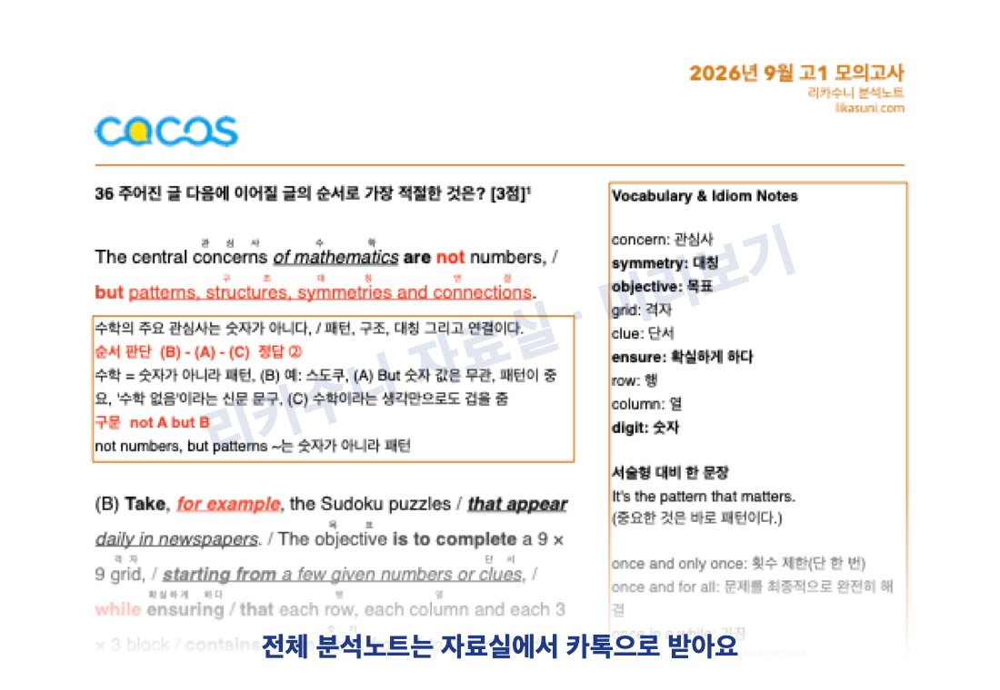

안녕하세요, 이매동 코코스학원 리카수니 원장입니다.
학생 요청으로 2026년 9월 고1 영어 모의고사 36번 분석노트를 만들었어요.
시험지를 옆에 펴 놓고 보시면 더 잘 보여요.
· 시험: 2026년 9월 고1 전국연합학력평가 영어
· 번호: 36번 (글의 순서, 3점)
· 정답: ② (B) - (A) - (C)
수학의 주요 관심사는 숫자가 아니라 패턴·구조·대칭·연결이라는 글이에요.
스도쿠를 예로 들어, 숫자 대신 글자나 모양을 써도 되니 중요한 건 패턴이고, 그래서 스도쿠를 할 수 있다면 수학도 할 수 있다고 마무리해요.
· 주어진 글: 수학 = 숫자가 아니라 패턴 (not A but B)
· (B): for example 로 스도쿠 퍼즐을 예로 들어요. 1부터 9까지 숫자를 행·열·3×3 블록에 한 번씩 넣는 퍼즐이에요.
· (A): But 으로 (B)의 '숫자(digits)'를 받아, 숫자 값은 상관없고 아홉 개의 서로 다른 기호면 된다고 반박해요. 끝에 '수학은 필요 없어요'라는 신문 문구가 나와요.
· (C): (A)의 신문 문구를 받아 '수학'이라는 말만으로도 사람들이 겁먹는다고 비판하고, If you can do Sudoku, you can do maths! 로 마무리해요.
→ (B) - (A) - (C), 정답 ②예요.
· (A)로 시작 → But the numerical values of the digits 의 digits 가 가리킬 숫자가 주어진 글에 없어요.
· (C)로 시작 → (C)는 신문 문구('수학 없음')에 대한 반응이라 그 문구가 나오는 (A) 뒤에 와야 해요.
순서 문제는 But·for example 같은 연결어와 the digits 같은 지칭어가 무엇을 받는지 먼저 확인하세요.

1) not A but B (A가 아니라 B)
→ are not numbers, but patterns, structures, symmetries and connections
2) 보어 to부정사 / 분사구문 / while + -ing
→ The objective is to complete a 9 × 9 grid, starting from a few given numbers, while ensuring that ~
3) 관계대명사 what 주어 / It is ~ that 강조
→ what is important is that ~ / It's the pattern that matters.
4) 동격의 that / enough to부정사
→ the idea that something might be spoiled by mathematics is enough to scare off potential solvers
· concern 관심사
· symmetry 대칭
· objective 목표
· grid 격자 / row 행 / column 열
· clue 단서
· ensure 확실하게 하다
· digit 숫자
· numerical 수치의
· irrelevant 관련 없는 (↔ relevant)
· distinct 서로 다른, 별개의
· reasoning 추론
· spoil 망치다
· scare off 겁주어 쫓아 버리다
· potential 잠재적인
· once and only once 단 한 번
분석노트에 '서술형 대비 한 문장'(It's the pattern that matters. 중요한 것은 바로 패턴이다)과 영어 핵심 요약(Core Summary), 스도쿠 그림 설명을 함께 정리해 두었어요.
자료실 회차 페이지에서 카카오 로그인 후 번호를 고르면 카톡으로 PDF 를 받을 수 있어요.
같은 회차 다른 번호도 요청할 수 있어요.
▶ 2026년 9월 고1 영어 자료 보기
https://data.likasuni.com/moe/go1/2026-09/eng/
분당 이매동 코코스학원은 초등·중등·고등 영어와 수학을 가르쳐요.
모의고사·수능특강·내신 대비가 궁금하시면 편하게 문의해 주세요.
· 홈페이지: https://www.cocosedu.co.kr/
· 주소: 경기 성남시 분당구 판교로 476 2층